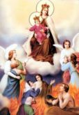

Doa Untuk Jiwa-Jiwa Di Api Penyucian
Tuhan,
Berilah mereka istirahat kekal dan sinarilah
mereka dengan cahaya abadi. Semoga semua orang yang sudah meninggal
beristirahat dalam damai. Amin
Puji Syukur No. 123
Bapa,
Selamatkanlah saudara-saudara kami, kaum beriman, dan semua
orang lain yang telah meninggal dunia. Berikanlah istirahat kekal
kepada mereka dan kepada semua saudara yang meninggal dalam Kristus.
Kasihanilah dan sambutlah mereka dalam pangkuan-Mu. Amin
Puji Syukur No. 259
Rosario Kepada Bunda Maria
Aku percaya ...
Bapa Kami ...
Salam Maria ...
Kemuliaan ...
Pada butir besar rosario (1x):
Allahku, aku
percaya kepada-Mu sebab Engkaulah Kebenaran sejati. Aku mengandalkan-Mu
sebab Engkau Kebaikan tak terhingga. Aku mengasihi-Mu, sebab Engkau
paling patut dikasihi. Demi kasih kepada-Mu, aku mengasihi semua
saudaraku.
Pada butir kecil rosario (10x)
Santa Perawan
Maria, hiburlah semua orang yang menderita, doakanlah mereka yang
saat ini menghadapi ajalnya atau sedang dimurnikan di Purgatorium. Amin
Pada akhir (3x)
Tuhan , berikanlah mereka istirahat kekal. Semoga cahaya yang kekal menerangi mereka. Amin
atau:
Mzm130:1-8
Doa Selama 1 Minggu Untuk Jiwa-Jiwa Di Purgatorium
Hari Pertama
Tuhan, Allah yang mahakuasa, demi
Darah Suci yang ditumpahkan oleh Putra-Mu Yesus Kristus, di Taman
Getsemani, aku memohon kepada-Mu: Sudilah membebaskan jiwa-jiwa dari
Purgatorium, terutama mereka yang tidak pernah didoakan oleh siapapun.
Terimalah mereka dalam kemuliaan-Mu, tempat mereka akan memuji dan
memuliakan Engkau selama-lamanya. Amin
Bapa Kami ...
Salam Maria ...
Tuhan, berilah mereka istirahat kekal.
Semoga cahaya yang abadi menerangi mereka.
Hari Kedua
Tuhan, Allah yang Mahakuasa, demi
Darah Suci yang ditumpahkan oleh Putra-Mu Yesus Kristus pada saat Ia
dicambuk dengan kejam, aku memohon kepada-Mu: Sudilah membebaskan
jiwa-jiwa dari Purgatorium, terutama yang pada saat ini paling pantas
masuk ke dalam kemuliaan-Mu, supaya mereka segera dapat memuji-muji dan
memuliakan Engkau selama-lamanya. Amin
Bapa Kami ...
Salam Maria ...
Tuhan, berilah mereka istirahat kekal.
Semoga cahaya yang abadi menerangi mereka.
Hari Ketiga
Tuhan, Allah yang Mahakuasa, demi
Darah Suci yang ditumpahkan oleh Putra-Mu Yesus Kristus pada saat Ia
dimahkotai duri, aku memohon kepada-Mu: Sudilah membebaskan jiwa-jiwa
dari Purgatorium, terutama yang pada saat ini paling membutuhkan doa
kami, supaya mereka secepatnya dapat memuji dan memuliakan Engkau
selama-lamanya. Amin
Bapa Kami ...
Salam Maria ...
Tuhan, berilah mereka istirahat kekal.
Semoga cahaya yang abadi menerangi mereka.
Hari Keempat
Tuhan, Allah yang Mahakuasa,
demi Darah Suci yang ditumpahkan oleh Putra-Mu Yesus Kristus pada saat
Ia melewati jalan-jalan Yerusalem sambil memikul salib, aku memohon
kepada-Mu: Sudilah membebaskan jiwa-jiwa dari Purgatorium, terutama
yang menurut-Mu paling banyak kebaikannya, supaya mereka secepatnya
dapat memuji dan memuliakan Engkau selama-lamanya. Amin
Bapa Kami ...
Salam Maria ...
Tuhan, berilah mereka istirahat kekal.
Semoga cahaya yang abadi menerangi mereka.
Hari Kelima
Tuhan, Allah yang Mahakuasa,
demi Darah Suci yang ditumpahkan oleh Putra-Mu Yesus Kristus, yang pada
malam menjelang wafat-Nya diberikan-Nya kepada para rasul dan Gereja
Kudus sebagai kurban dan makanan yang menghidupkan kaum beriman, aku
memohon kepada-Mu: Sudilah membebaskan jiwa-jiwa dari Purgatorium,
terutama mereka yang berdevosi khusus pada sakramen Mahakudus, supaya
mereka secepatnya dapat memuji dan memuliakan Engkau, bersama Putra-Mu
dan Roh Kudus selama-lamanya. Amin
Bapa Kami ...
Salam Maria ...
Tuhan, berilah mereka istirahat kekal.
Semoga cahaya yang abadi menerangi mereka.
Hari Keenam
Tuhan, Allah yang Mahakuasa,
demi Darah Suci yang ditumpahkan oleh Putra-Mu Yesus Kristus saat Ia
tergantung di salib, aku memohon kepada-Mu: Sudilah membebaskan
jiwa-jiwa dari Purgatorium, yang seharusnya paling sering kudoakan,
supaya kelalaianku jangan menjadi penghalang bagi mereka untuk masuk ke
dalam kemuliaan-Mu, tempat mereka bersama para malaikat dan para Kudus
dapat memuji dan memuliakan Engkau, bersama Putra-Mu dan Roh Kudus
selama-lamanya. Amin
Bapa Kami ...
Salam Maria ...
Tuhan, berilah mereka istirahat kekal.
Semoga cahaya yang abadi menerangi mereka.
Hari Ketujuh
Tuhan, Allah yang Mahakuasa, demi
Darah Suci yang ditumpahkan dari lambung Putra-Mu Yesus Kristus, dan
yang disaksikan oleh Bunda-Nya yang tersuci, aku memohon kepada-Mu:
Sudilah membebaskan jiwa-jiwa dari Purgatorium, terutama yang paling
rajin menghormati Bunda Maria, supaya mereka segera dapat memuji dan
memuliakan Engkau, bersama Putra-Mu dan Roh Kudus selama-lamanya. Amin
Bapa Kami ...
Salam Maria ...
Tuhan, berilah mereka istirahat kekal.
Semoga cahaya yang abadi menerangi mereka.
Novena Untuk Yang Telah Meninggal Dunia
Doa setiap hari
Allah yang Mahakuasa dan kekal,
aku percaya akan sabda-Mu dalam Kitab Suci maupun Tradisi. Selama
novena ini aku ingin menghidupkan dan menguatkan imanku akan
persekutuan para kudus serta mempersatukan diri dengan mereka yang
telah meninggal dunia, namun masih menderita di Purgatorium. Sesudah
hidup di bumi ini, mereka semua sudah berjumpa dengan-Mu sebagai Hakim
yang Mahaadil dan juga sebagai Bapa yang Maharahim. Tetapi, selama
waktu yang hanya Engkau tahu lamanya, mereka harus mengalami
keterpisahan dari-Mu, yang sangat menyiksa mereka. Melalui doa yang
tulus dan hidup Kristen yang lurus, aku hendak memperingan penderitaan
dan kepedihan mereka serta memperpendek waktu mereka di Purgatorium.
Pada saat ini, dengan perantaraan Yesus Kristus, serta melalui doa
Bunda Maria dan Santo Yosef, secara khusus kupersembahkan kepadamu almarhum(ah) ........
yang kematiannya membuat aku sangat sedih. Aku berharap bahwa mereka
yang telah meninggal dunia, melalui penderitaanya dan doa-doanya di
Purgatorium, dapat memabantu aku yang masih di bumi ini,
khususnya aku memohon untuk ........, yang dengan rendah hati sangat kuharapkan, dan juga rahmat untuk selalu hidup sesuai dengan kehendak-Mu. Amin.
Hari Pertama
Tuhan Yesus, kepada-Mu kupercayakan
semua Paus, Uskup, Imam, biarawan dan biarawati yang telah meninggal
dunia, khususnya mereka yang pelayananya sempat aku alami secara
pribadi atau oleh keluargaku. Para pejabat Gereja yang memang tidak
terlepas dari berbagai kelemahan. Aku mohon: ampunilah mereka. Secara
khusus kupersembahkan kepada-Mu para Imam yang telah memberikan
Sakramen-sakramen Suci dan telah menanamkan sabda-Mu padaku.
Yesus yang Maharahim, pandanglah niat baik mereka serta kehendak mereka
yang tulus. Berilah mereka segera sukacita hidup yang kekal. Amin.
Bapa Kami ...
Salam Maria ...
Kemuliaan ...
Tuhan, berilah mereka istirahat kekal.
Semoga cahaya yang abadi menerangi mereka.
Hari Kedua
Tuhan Yesus, dengan hati penuh syukur
aku berdoa untuk arwah yang paling dekat dengan hatiku, yaitu para
orang tua, saudara-saudaraku, para leluhur serta semua
sanak-saudaraku. Karena mereka aku mendapatkan banyak
anugrah, padahal selama mereka hidup, mungkin aku kurang menghargai
jasa mereka atau malah menyakiti hati mereka dengan kelakuanku. Yesus
yang Maharahim, ampunilah dosa mereka. Hargailah segala perbuatan baik
mereka dan segala derita yang mereka tanggung demi
kebaikan. Semoga mereka secepatnya dapat mengalami sukacita
hidup yang kekal di surga. Amin.
Bapa Kami ...
Salam Maria ...
Kemuliaan ...
Tuhan, berilah mereka istirahat kekal.
Semoga cahaya yang abadi menerangi mereka.
Hari Ketiga
Tuhan Yesus, aku percaya
bahwa hubungan kasih yang sejati antar manusia lebih kuat dari
pada kematian. Karena itu aku mempercayakan kepada-Mu semua sahabatku,
tetanggaku, kenalanku, dan semua orang lain yang pernah aku jumpai,
yang telah meninggal dunia. Maafkan dan lupakanlah segala kekurangan
dan dosa-dosa mereka. Terimalah mereka semua di sisi-Mu. Amin.
Bapa Kami ...
Salam Maria ...
Kemuliaan ...
Tuhan, berilah mereka istirahat kekal.
Semoga cahaya yang abadi menerangi mereka.
Hari Keempat
Tuhan Yesus, aku adalah orang yang
lemah dan berdosa. Bila saja di Purgatorium ada jiwa yang karena
kesalahanku, karena aku tidak memberi teladan yang baik. Aku sungguh
menyesali semua dosa-dosaku dan melalui novena ini aku ingin
memperbaiki kesalahnku. Semoga jiwa mereka secepatnya Engkau
bebaskan dari penderitaan dan segera dapat bersekutu dengan para
Kudus di surga. Amin.
Bapa Kami ...
Salam Maria ...
Kemuliaan ...
Tuhan, berilah mereka istirahat kekal.
Semoga cahaya yang abadi menerangi mereka.
Hari Kelima
Tuhan Yesus, pada hari ini
kupercayakan kepada-Mu semua jiwa yang tidak mempunyai seorang pun
untuk berdoa bagi mereka. Yang mungkin selama hidupnya, mereka tidak
pernah mangalami kasih dari siapa pun. Dan yang tidak seorang pun
peduli pada mereka. Untuk jiwa-jiwa itulah aku panjatkan doa ini.
Semoga mereka segera dapat mangalami terang dan suka cita abadi di
surga. Amin.
Bapa Kami ...
Salam Maria ...
Kemuliaan ...
Tuhan, berilah mereka istirahat kekal.
Semoga cahaya yang abadi menerangi mereka.
Hari Keenam
Tuhan Yesus, penderitaan selalu
menyertai dalam kehidupan di bumi ini. Engkau sendiri pun telah
mengalaminya. Tetapi aku sering kali tidak menyadari makna
dari penderitaan,dan sering kali aku berontak dan kehilangan arah
tujuan. Pada saat ini aku mempercayakan kepada-Mu semua orang yang
selama kehidupannya sangat menderita, semua orang yang putus asa, semua
orang yang telah mengakhiri hidupnya sendiri. O Tuhan, tunjukanlah
kepada mereka bahwa Engkau adalah Sang Juru Selamat. Berilah
mereka suka cita yang kekal bersama-Mu di surga. Amin.
Bapa Kami ...
Salam Maria ...
Kemuliaan ...
Tuhan, berilah mereka istirahat kekal.
Semoga cahaya yang abadi menerangi mereka.
Hari Ketujuh
Tuhan Yesus, betapa banyaknya orang
yang meninggal secara mendadak, yang meninggal karena kecelakaan,
bencana alam, peperangan, ........ Sama seperti aku, pasti mereka
pasti mempunyai rencana- rencana dalam kehidupannya. Namun,
rencana-rencana itu tidak pernah bisa terlaksanakan. Terimalah
pengorbanan mereka dan ampunilah semua dosa-dosa mereka dan bawalah
mereka kedalam kemuliaan dan sukacita-Mu yang abadi. Amin
Bapa Kami ...
Salam Maria ...
Kemuliaan ...
Tuhan, berilah mereka istirahat kekal.
Semoga cahaya yang abadi menerangi mereka.
Hari Kedelapan
Tuhan Yesus, melalui wafat-Mu di
kayu salib, Engkau telah mengalahkan kematian. Dan melalui
kebangkitan-Mu, Engkau telah memberikan hidup kekal bagi kami. Aku
memohon, kabulkanlah doa-doa yang kupanjatkan untuk para arwah seluruh
umat Kristen. Semoga mereka semua segera mengalami kemuliaan dan
sukacita abadi di surga. Amin
Bapa Kami ...
Salam Maria ...
Kemuliaan ...
Tuhan, berilah mereka istirahat kekal.
Semoga cahaya yang abadi menerangi mereka.
Hari Kesembilan
Allah Bapa yang Mahakuasa,
Engkau telah menciptakan manusia menurut gambaran-Mu dan rupa-Mu
sendiri. Engkau tentu menginginkan kami semua masuk kedalam
kerajaan-Mu. Kepada-Mu kupercayakan semua orang yang telah meninggal
dunia. Semoga doa-doaku memperingan dan mempercepat penderitaan mereka
di Purgatorium, dan semoga mereka segera mengalami sukacita abadi di
surga bersama-Mu. Amin.
Bapa Kami ...
Salam Maria ...
Kemuliaan ...
Tuhan, berilah mereka istirahat kekal.
Semoga cahaya yang abadi menerangi mereka.
Litani Tubuh Kristus Untuk Arwah
M. Budi Sarjono
Tuhan kasihanilah kami
Tuhan kasihanilah kami
Kristus kasihanilah kami
Kristus kasihanilah kami
Tuhan kasihanilah kami
Tuhan kasihanilah kami
Kristus dengarkanlah doa kami
Kristus kabulkanlah doa kami
Tubuh Kristus, Putra Tunggal Allah
Bapa, ampunilah arwah saudara kami .........
Tubuh Kristus, Yang duduk di sebelah kanan Allah Bapa,
Tubuh Kristus, Takhta Roh Kudus,
Tubuh Kristus, Yang dikandung Perawan Maria karena Roh Kudus,
Tubuh Kristus, Yang dilahirkan sebagai manusia biasa,
Tubuh Kristus, Raja Malaikat,
Tubuh Kristus, Yang sulung di antara kita,
Tubuh Kristus, Sahabat Utama hamba yang hina,
Tubuh Kristus, Pembuka pintu surga,
Tubuh Kristus, Yang pernah mati bagi kita,
Tubuh Kristus, Yang bangkit dari alam maut,
Tubuh Kristus, Yang menghancurkan kuasa dosa dan maut,
Tubuh Kristus, Bait Allah perlindungan para arwah,
Tubuh Kristus, Putra Daud bagi yang lapar akan pengampunan,
Tubuh Kristus, Perantara menuju Bapa,
Tubuh Kristus, Jalan menuju kehidupan abadi surgawi,
Tubuh Kristus, Bahtera Ilahi tempat arwah-arwah berserah diri,
Tubuh Kristus, Pokok Anggur tempat jiwa-jiwa bergantung,
Tubuh Kristus, Mazmur Ilahi penghibur hati kaum beriman,
Tubuh Kristus, Lilin Surgawi di tengah kegelapan,
Tubuh Kristus, Mercu Suar Abadi di tengah samudra pengampunan,
Tubuh Kristus, Sumber pertolongan bagi arwah-arwah di api penyucian,
Tubuh Kristus, Jembatan Ilahi menuju rumah Bapa,
Tubuh Kristus, Yang selalu mendengar rintihan arwah-arwah kaum beriman,
Tubuh Kristus, Hakim Agung yang Mahaadil,
Tubuh Kristus, Sumber pengampunan bagi yang mau bertobat,
Tubuh Kristus, Yang dikelilingi para kudus
Tubuh Kristus, Izinkanlah arwah saudara kami....... menikmati damai surgawi. (10x)
Doa
Allah Bapa yang maha pengasih, dari pada-Mu
kami berasal, dan di haribaan-Mu hidup kami berakhir. Tubuh kami Engkau
ciptakan dari debu dan akan kembali menjadi debu. Namun jiwa kami yang
berasal dari hembusan nafas-Mu akan kembali kepada-Mu pula.
Kini
pandanglah kami yang berkumpul di sini, insan-insan yang lemah, mudah
jatuh ke dalam godaan dan dosa. Tetapi kami menjadi kuat karena Roh
Kudus yang Engkau utus dengan setia mendampingi kami. Meski begitu,
dalam perjalanan peziarahan menuju rumah-Mu, kami sering jatuh; namun
bangkit kembali karena tangan Putra-Mu, Tuhan kami Yesus Kristus,
terulur dan menuntun kami.
Begitu pula ya Bapa, perjalanan hidup
saudara-saudara kami yang telah meninggal dunia, mereka tidak luput
dari salah dan dosa. Karena kesalahan dan dosa itu, mungkin arwah
saudara-saudara kami kini masih berada di api penyucian. Mereka tidak
berdaya, selain memohon pengampunan-Mu. Kami yang berkumpul di sini pun
ikut memohon kepada-Mu, sudilah mengampuni arwah saudara-saudara kami.
Tak henti-hentinya pengampunan itu kami mohonkan kepada-Mu, agar kelak
arwah saudara-saudara kami layak dan pantas Engkau panggil masuk ke
dalam hidup abadi bersama para kudus.
Dengan perantaraan Tubuh
Putra-Mu terkasih Tuhan kami Yesus Kristus dalam rupa roti, dan dengan
perantaraan Darah Putra-Mu terkasih Tuhan kami Yesus Kristus dalam rupa
anggur, kami serahkan arwah saudara-saudara kami ke dalam tangan-u.
Basuhlah salah dan dosa yang masih melekat padanya dengan kasih
pengampunan-Mu. Sebab Engkaulah yang hidup dan berkuasa, kini dan
sepanjang masa. Amin
Bapa Kami ...
Salam Maria ... (3x)
Kemuliaan ...
 Purgatorium
Purgatorium